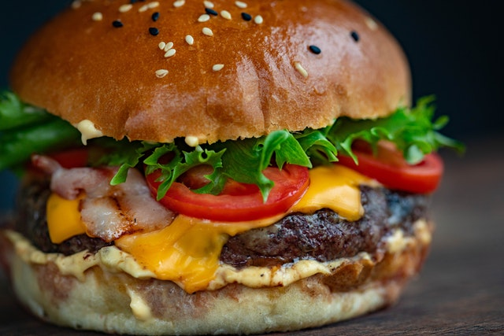

Bacon, Lettuce, and Tomato Hamburger

Description
Enjoy this juicy and delicious burger after just a few steps of preparation and cooking. Sure to be a hit for anyone looking for a new dish to try. The fresh tomatos and bright green lettuce pack a punch of freshness perfect for enjoying in the summer heat. The savory bacon, smooth, melted cheese, and spicy mayonnaise spread complement the juicy paddy. All of which is sandwiched between toasted sesame seed buns for the ultimate burger eating experience.
Ingredients
- Franz Sesame Hamburger Buns
- Head of Iceberg lettuce
- 4 Red Tomatos
- 1 LB Bacon
- Medium Sliced Cheddar Cheese
- 1 LB Ground Beef
- Sliced Bacon
- Mayonnaise
- Ketchup
- Garlic Powder
- Smoked Paprika
- Salt
- Ground Black Pepper
Steps
- Prepare the sauce at least 2 hours ahead of time. Start by combing mayonnaise, ketchup, garlic powder, smoked paprika, salt, and ground black pepper into a small bowl.
- Mix the ingredients together until fully combined. Now, cover and store in the fridge for 1 to 2 hours.
- Before preparing the burgers, set your grill to heat to between 375 and 400 degrees Fahrenheit. To start preparing the burgers, lightly form the ground beef into balls. Then gently press the patties to flatten them. They should be roughly 4 1/2 inches in diameter and will shrink while being cooked.
- Once all of the patties are formed. placed them on the fully-heated grill. Cook them until their internal temperatures are 160 degrees Fahrenheit to be fully cooked. Then place the cheese on top until it is fully melted, upon which you should remove the burger from the grill.
- Now to serve the burgers, use the sauce we created earlier and spread it on the bottom bun. Now place the burger patty on top of the sauce. Next layer a few bacon strips, a few slices of tomato, and one or two leaves from the iceberg lettuce. Finally, you can cover the lettuce with the top half of the bun and enjoy your meal.